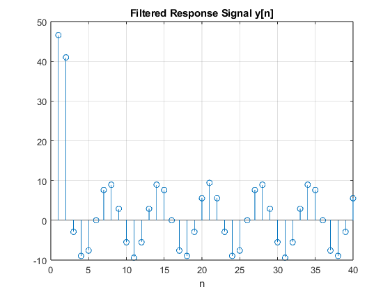
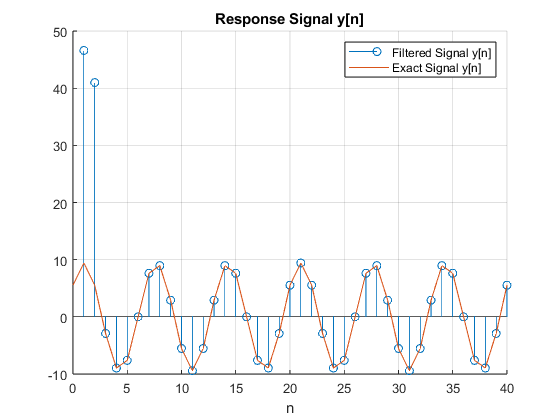
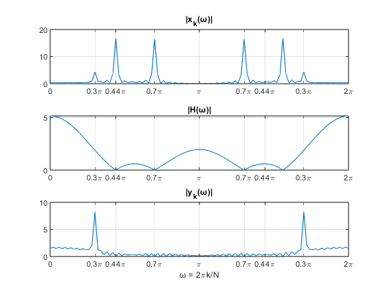

Project - Frequency Response of FIR Filters
David Venegas u0934702 ECE 6530: Digital Signal Processing University of Utah
Contents
P-12: Frequency Response: Bandpass & Nulling Filters
% The goal of this lab is to study the response of FIR filters to inputs such % as complex exponentials and sinusoids. In the experiments of this lab, you % will use firfilt(), or conv(), to implement filters and freqz() to obtain % the filter's frequency response. As a result, you should learn how to % characterize a filter by knowing how it reacts to different frequency % components in the input. This lab also introduces two practical filters: % bandpass filters and nulling filters. Bandpass filters can be used to detect % and extract information from sinusoidal signals, e.g., tones in a touch-tone % telephone dialer. Nulling filters can be used to remove sinusoidal interference, % e.g., jamming signals in a radar.
3.1 Nulling Filters for Rejection
clc;clear;
(a).
% Design a filtering system that consists of the cascade of two FIR nulling % filters that will eliminate the following input frequencies: ω = 0.44π, and ω = 0.7π. % For this part, derive the filter coefficients of both nulling filters. % Basic FIR Nulling Filter: y[n] = x[n] - 2cos(ω)x[n-1] + x[n-2] % Coefficients of [FIR 1] for ω = 0.44π: FIR1_b = [1 -2*cos(0.44*pi) 1]; % Coefficients of [FIR 1] for ω = 0.7π: FIR2_b = [1 -2*cos(0.7*pi) 1];
(b)
% Generate an input signal x[n] that is the sum of three sinusoids: % x[n] = 5cos(0.3πn) + 22cos(0.44πn - π/3) + 22cos(0.7πn - π/4) % Make the input signal 150 samples long over the range 0 ≤ n ≤ 149. n = 0:149; x = 5*cos(0.3*pi*n) + 22*cos((0.44*pi*n) - (pi/3)) + 22*cos((0.7*pi*n) - (pi/4));
(c)
% Filter the sum of three sinusoids signal x[n] through the filters designed % in part (a). Show the MATLAB code that you wrote to implement the cascade % of two FIR filters. % Cascaded FIR Filter = [FIR 1] * [FIR 1] FIR_null = conv(FIR1_b, FIR2_b); % System Response y = conv(x,FIR_null,'same');
(d)
% Make a plot of the output signal—show the first 40 points. Determine % (by hand) the exact mathematical formula (magnitude, phase and frequency) % for the output signal for n ≥ 5. % Plot of the filtered signal figure(1) stem(y); xlim([0 40]); xlabel('n'); title('Filtered Response Signal y[n]'); grid on; % Filter response at H(0), H(0.3π), H(0.44π), H(0.7π) w = [0 0.3*pi, 0.44*pi, 0.7*pi]; H1 = 1 - (2*cos(0.44*pi))*exp(-1j*w) + exp(-1j*w*2); H2 = 1 - (2*cos(0.7*pi))*exp(-1j*w) + exp(-1j*w*2); H = H1 .* H2; H_mag = abs(H); H_rad = angle(H); % Exact Mathematical Formula y_exact = 5*cos((0.3*pi*n) - 1.8850)*(1.8828);
(e)
% Plot the mathematical formula determined in (d) with MATLAB to show that % it matches the filter output over the range ≤ n ≤ 40. figure(2) hold on stem(y); plot(n-1,y_exact); xlim([0 40]); legend('Filtered Signal y[n]','Exact Signal y[n]'); xlabel('n'); title('Response Signal y[n]'); grid on; hold off
(f)
% Explain why the output signal is different for the first few points. % How many "start-up” points are found, and how is this number related to the % lengths of the filters designed in part (a)? Hint: consider the length of a % single FIR filter that is equivalent to the cascade of two length-3 FIRs fprintf(['There is a high response on the first two (2) points of y[n] \n' ... 'which are related to the number of coefficients in the FIR Nulling \n'... 'filter, this is due to the cascade realization of the L = 3 FIR filters: \n'... 'When two discrete systems are cascaded, we must do a convolution of the \n'... 'systems involved h = h1 * h2 with a resulting FIR filter with a number of \n'... 'coefficients L1 + L2 - 1 = 5.']);
There is a high response on the first two (2) points of y[n] which are related to the number of coefficients in the FIR Nulling filter, this is due to the cascade realization of the L = 3 FIR filters: When two discrete systems are cascaded, we must do a convolution of the systems involved h = h1 * h2 with a resulting FIR filter with a number of coefficients L1 + L2 - 1 = 5.
FRREQUNECY ANALYSIS FOR PROJECT PRESENTATION
% Basic FIR Nulling Filter: y[n] = x[n] - 2cos(ω)x[n-1] + x[n-2] k = 0:149; N = 100; w = (2*pi*k)/N; % To block ω = 0.44π: H1 = 1 - (2*cos(0.44*pi))*exp(-1j*w) + exp(-1j*w*2); % To block ω = 0.7π: H2 = 1 - (2*cos(0.7*pi))*exp(-1j*w) + exp(-1j*w*2); % Cascaded FIR Filter H = H1.*H2; % Generate an input signal x[n] that is the sum of three sinusoids: % x[n] = 5cos(0.3πn) + 22cos(0.44πn - π/3) + 22cos(0.7πn - π/4) n = 0:149; x = 5*cos(0.3*pi*n) + 22*cos((0.44*pi*n) - (pi/3)) + 22*cos((0.7*pi*n) - (pi/4)); N = 100; % Furier Series Coefficients {ck} ck = dfs(x, N); % Complex exponential signal yk[n] yk = ck .* H; % System Response y[n] y = idfs(yk, N); %Plots figure(1) subplot(3,1,1) plot(w,abs(ck)); title('|x_{k}(ω)|'); xticks([0 0.3*pi 0.44*pi 0.7*pi pi pi+0.3*pi pi+0.44*pi pi+0.7*pi 2*pi]) xticklabels({'0','0.3\pi','0.44\pi','0.7\pi','\pi','0.7\pi','0.44\pi','0.3\pi','2\pi'}); xlim([0 2*pi]); grid on; subplot(3,1,2) plot(w,abs(H)); title('|H(ω)|'); xticks([0 0.3*pi 0.44*pi 0.7*pi pi pi+0.3*pi pi+0.44*pi pi+0.7*pi 2*pi]) xticklabels({'0','0.3\pi','0.44\pi','0.7\pi','\pi','0.7\pi','0.44\pi','0.3\pi','2\pi'}); xlim([0 2*pi]); grid on; subplot(3,1,3) plot(w,abs(yk)); title('|y_{k}(ω)|'); xticks([0 0.3*pi 0.44*pi 0.7*pi pi pi+0.3*pi pi+0.44*pi pi+0.7*pi 2*pi]) xticklabels({'0','0.3\pi','0.44\pi','0.7\pi','\pi','0.7\pi','0.44\pi','0.3\pi','2\pi'}); xlim([0 2*pi]); xlabel('ω = 2\pik/N'); grid on;
Matlab Functions
function matlab_bug() % (IGNORE) % This is a dummy function that fixes Matlab bug #496201 % where outputs are being printed in the end of the publishing html % instead of their respective sections. workaround() %%The answer to everything is... my_subfunction(); % (IGNORE) end function DFS = dfs(x, N) % Compute the Discrete Fourier Series (DFS) coefficients of a periodic 1-D % signal, where x is one period of the signal and N is the fundamental period. % Find vector x(n) number of elements x_length = numel(x); % Generate discrete n-numbers based on x(n) n = 0:x_length-1; % Preallocate array ck ck = zeros(size(x)); for k = 0:x_length-1 ck(k+1) = (1/N) * sum(x(n+1) .* exp((-1j*2*pi*k*n)/N)); end DFS = conj(ck); end function IDFS = idfs(ck, N) % Compute the Inverse Discrete Fourier Series (IDFS), where X is the % DFS coefficient array and N is the fundamental period. % Find vector c(k) number of elements ck_length = length(ck); % Generate discrete k-numbers based on c(k) k = 0:ck_length-1; % Preallocate array ck x = zeros(size(ck)); for n = 0:ck_length-1 x(n+1) = sum(ck(k+1) .* exp((1j.*2.*pi.*k.*n)./N)); end IDFS = conj(x); end